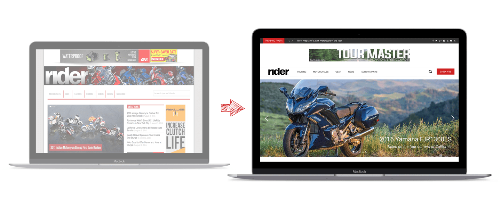

How We Got There

Discovering the Rider Brand
Designing for Rider magazine was a bit of a challenge because our team was composed of people who were clueless about the Rider brand, motorcycles and riding culture in general. My team’s first task in developing the design was to know as much as we could about Rider magazine. During the stakeholders interview, I asked the Rider team the "WHY" of the business. By knowing the three keywords that describe the Rider brand, I was able to develop a design strategy that aligns with these goals.